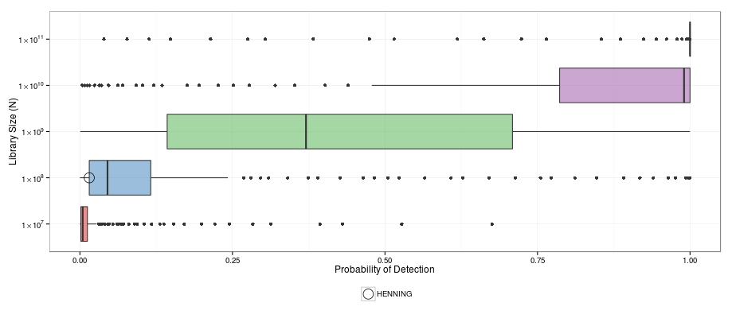

I am a graduate student at Iowa State University in the Department of Statistics.  I graduated from the University of Washington in 2012 with a BS in Statistics and a BS in Computer Engineering.  My research interests include statistical computing, data analysis, statistical graphics, and experimental design.  I have spent two years working at TIBCO Software designing an automated R package compatibility framework.  I am currently developing an <a href="http://www.pelica.org">interactive web application</a> to analyze the properties of peptide libraries.


